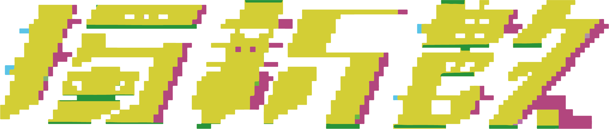
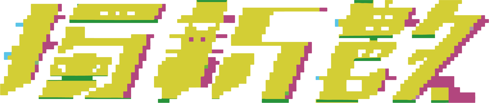
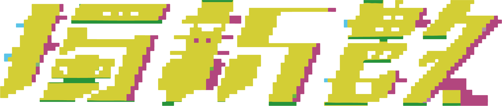

國立嘉義大學 數位學習設計與管理學系 一一〇級畢業專題
國立嘉義大學 數位學習設計與管理學系 一一〇級畢業專題
國立嘉義大學 數位學習設計與管理學系 一一〇級畢業專題
 

NCYU DEDM 110th Graduation Project Exhibition
獨特 一種出眾的魅力
新穎 一見傾心的誘惑
數位 零壹交織的組合光譜
© 2020 國立嘉義大學 數位學習設計與管理學系
國立嘉義大學 數位學習設計與管理學系 一一〇級畢業專題
國立嘉義大學 數位學習設計與管理學系 一一〇級畢業專題
國立嘉義大學 數位學習設計與管理學系 一一〇級畢業專題

NCYU DEDM 110th Graduation Project Exhibition
20/12/30
嘉義大學民雄校區 教育館一樓
21/05/05 - 21/05/07
高雄展覽館北館
預見海洋最糟的情況，你會怎麼做？
審判與混沌，見證法老重生之途
產地到餐桌，值得收藏的海鮮知識庫
呼吸停止前，找到生存的方法吧！
人生想要精彩 旗跑就要現在
星象之形必有因，破謠解惑為君醒
把所有空曠，慢條斯理地盛裝
一探究竟，就近移碳
霸凌背後的真相，究竟是什麼？
聽聞炮火至，遊人夜未眠
用擬人化的圖像，拉近與廟的距離
粵級挑戰，等你挑戰!
產地到餐桌，值得收藏的海鮮知識庫。

介紹二十四種常見海鮮自「產地」到「餐桌」
的過程，並分為「選、買、洗、煮」四面向
探討。製作網站、遊戲，並經營宣傳平台，
透過餐桌上的美味，回溯並補充海鮮相關知識。
指導老師：王佩瑜老師
把所有空曠，慢條斯理地盛裝
在每個低落的夜晚，模仿舒展的姿態
成為玻璃瓶裡流淌的液體、訴說或低語
成為氣味、甘甜和辛辣
成為揮發
成為慵懶的、輕巧的、溜過生活每個角落的
貓
指導老師：王佩瑜老師
霸凌背後的真相，究竟是什麼？
一款VR密室逃脫遊戲，結合動畫與遊戲，
體驗霸凌所帶來的傷害。
尋 | 找尋霸凌背後的真相
失 | 找回失去的片段
指導老師：邱柏升老師